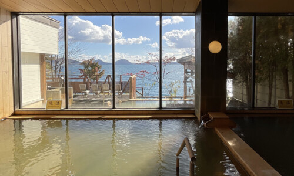
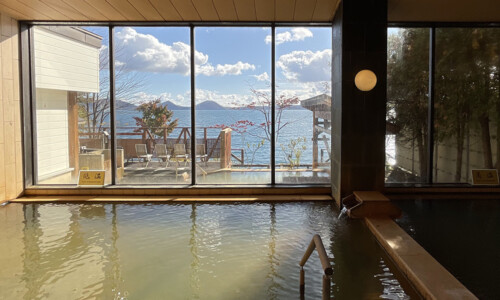
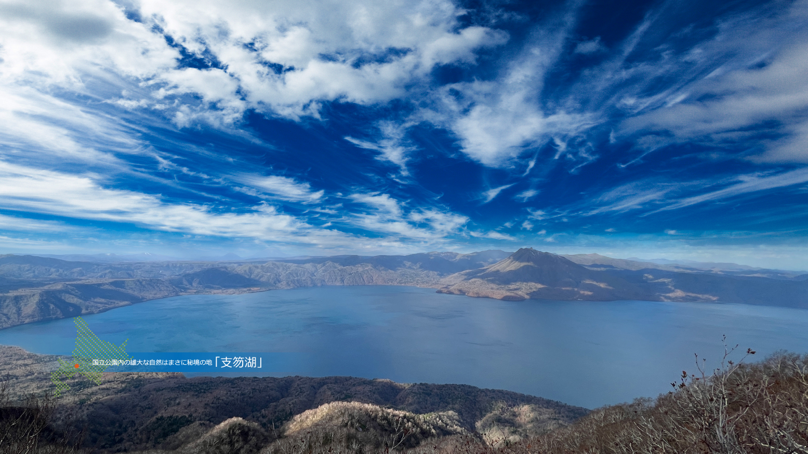
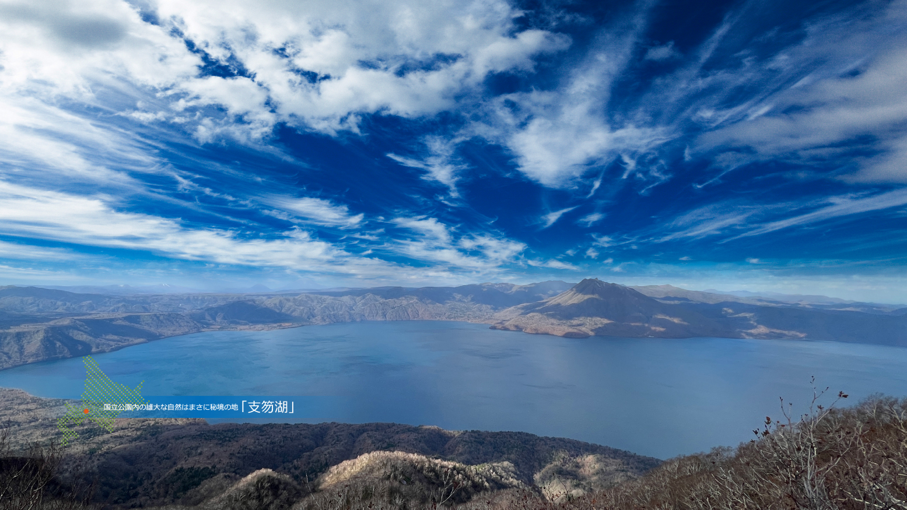

希少な「足元湧出」天然温泉
丸駒温泉旅館「初代 佐々木初太郎」が大正四年に探し当てた源泉は現在でも豊富な湧出量を誇りその泉質と共に皆様に親しんで頂いております。
天然露天風呂、展望露天風呂、内湯のどこからも支笏湖を一望することができ景色も自慢の温泉です。
大浴場に併設しております「本場フィンラ ンド式ロウリュー可能なサウナ」はサウナ愛好家の皆様をうならせる本格仕様で、
低温においてもロウリューによって発汗を促し、体に負担の少 ないサウナです。
水風呂は水質11年連続日本一にも輝いた支笏湖の水を贅沢にもかけ流しています。
さらには貴重な「ととのいタイム」のための外気浴チェアの先には国立公園に指定されている絶景が広がります。
全国でも二十ヶ所と言われる足元から湧出する天然露天風呂は支笏湖と同じ高さの水位で、
男女大浴場の外湖畔側にあるから展望露天風呂からは 同じく国立公園絶景の支笏湖が広がります。
バレルサウナ付き貸切風呂はご家族やグループでプライベートな感覚で楽しむことが出来ます。
男性大浴場
内 湯・露天風呂
サウナ・水風呂・外気浴スペース
○ 入浴時間
15:00 ~ 23:00
04:00 ~ 09:00

保温効果抜群の「塩化物泉」
泉質:ナトリウム・カルシウム-塩化物・炭酸水素塩・ 硫酸塩泉(旧泉質名:含土類・石膏・食塩泉) (中性低 張性高温泉) 源泉温度:54度

効能・適応症
神経痛・筋肉痛・関節痛、五十肩、運動麻痺・関節の こわばり・うちみ・くじき・痔疾・慢性消化器病・慢 性皮膚病・動脈硬化症・病後回復期・疲労回復・健康 増進・慢性婦人病・冷え症・虚弱児童
禁忌症
急性疾患(特に熱がある場合)・悪性腫瘍・重い 病・呼吸不全・腎不全 ・出血性疾患・活動性の 高度の貧血・その他一般に病勢進行中の疾患・女 (特に初期と末期)
女性大浴場
内 湯・露天風呂
サウナ・水風呂・外気浴スペース
○ 入浴時間
15:00 ~ 23:00
04:00 ~ 09:00

 

天然露天風呂
大浴場から続く渡り廊下の先にあるのが、全国でも約20か所しかないといわれる、足元湧 出湯の天然露天風呂。
浴場と湖を岩場で隔てただけの野趣あふれる造りは、創業当時から変わらぬ姿を守り続け ています。
湯は、支笏湖の湖水と同じ、無色透明。
自然まかせのこの風情が、秘湯と呼ばれるゆえんです。
当館は、全国の温泉宿からなる「日本秘湯のを守る会」の会員です。
湯の深さも、季節によって上下する、支笏湖の水位と同じ。
季節ごとに変わる景観とともに、支笏の自然と一体になる、ダイナミックな湯浴みのひと 時をお過ごしください。
 

展望露天風呂
見渡す限りの原生林や雄大な山々の姿を、時には優しく、時には凛とした表情で湖上に映 しだす神秘の湖、支笏湖。
「展望露天風呂」では、そんな支笏湖の大自然を、湯に浸かりながら眺めることができま す。
時間や季節の流れとともに、刻々と表情を変えていく大自然のパノラマを、当館自慢の天 然温泉とともにお楽しみください。
.jpg)
.jpg)
.jpg)
貸切風呂 〈丸の湯〉
バレルサウナ付
家族やご夫婦など、水入らずでお楽しみいただける貸切浴室を設置しています。
バレルサウナ付き貸切風呂「丸の湯」
50分 / 4,400円
110分 / 7,700円
定員4名
ご宿泊のお客様 / 10:00~23:00
日帰りのお客様 / 10:00~14:00
※ 日帰り入浴料金は別途必要です
※ 浴場にタオルの備え付けはございません。
→ 〈貸切風呂事前ご予約フォーム〉
.jpg)
.jpg)
貸切風呂 〈駒の湯〉
露天風呂付
家族やご夫婦など、水入らずでお楽しみいただける貸切浴室を設置しています。
貸切風呂「駒の湯」
50分
2,750円
定員4名
ご宿泊のお客様 / 10:00~23:00
日帰りのお客様 / 10:00~14:00
ご宿泊のお客様 / 10:00~23:00
日帰りのお客様 / 10:00~14:00
※ 日帰り入浴料金は別途必要です
※ 浴場にタオルの備え付けはございません。
→ 〈貸切風呂事前ご予約フォーム〉
日帰り温泉
丸駒温泉旅館では立ち寄り湯として、すべての「温泉」のご利用を頂けます。
※浴場にタオルの備え付けはございませんのでお客様にてご用意をお願いいたします。
※シャンプー・リンス・ボディソープ・ドライヤー完備しております。
※フェイスタオル販売 250円/バスタオルレンタル250円
※車椅子をご利用の方、身体の不自由な方のための昇降機をご用意しております。
移動などにお手伝いが必要な際は、お気軽にお申し付けください。
※日帰りでご利用の際は支笏湖バスターミナルからの送迎は行っておりませんのでご了承頂けま
す様お願い申し上げます。
※日帰りでのレストラン・喫茶の営業は行っておりません。
日帰り温泉入浴料金
大人(中学生以上) 1,200円
子供(小学生) 600円
幼児(3歳以上) 300円
幼児(3歳未満) 無 料
日帰り温泉ご利用時間
受付時間 10:00~14:00 (15:00ご退館) ※定休日 毎週火 ・ 水曜日
日本秘湯を守る会会員
日本秘湯を守る会は、地球の恵みであり、限りある地下資源である温泉に感謝することを 忘れることなく、 その利用と管理に充分な配慮をし、枯渇させることなく守り続けるため に自然環境の保持・保全に真摯に 取り組んで行く宿の集団です。
宿を取り巻く自然環境、温泉環境がどうあるべきかを問い続け、
『旅人の心に添う 秘湯は 人なり”は日本秘湯を守る会の永遠の理念であり、
使命として認識し、多くの旅人に支持さ れ、愛される宿の集まりでありたいと願っております。
日本秘湯を守る会 会員宿一同
日本秘湯を守る会について